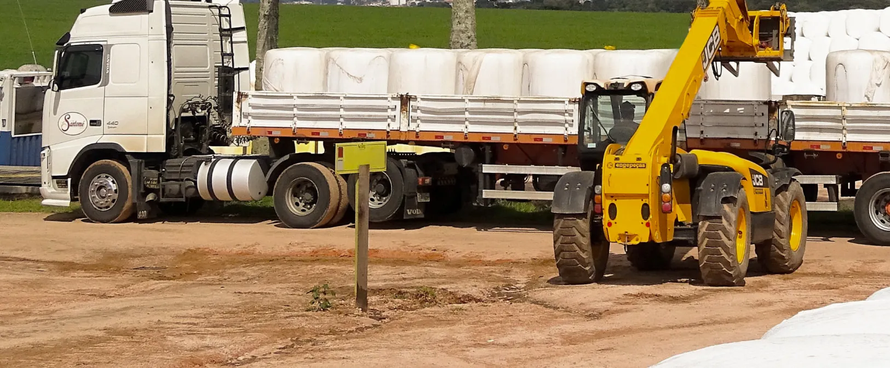

Крупногабаритные

| Габариты | |
|---|---|
| Условия транспортировки | |
| Количество в упаковке | |
| Тип упаковки | |
| Страна производства |
Характеристика груза
Генеральные грузы - продукция, которая перевозится поштучно, и принимается к перевозке по счету грузовых мест.
Виды товаров
К генеральным грузам могут относиться следующие виды товаров (продукции):
- различная металлопродукция
(арматура, слитки, прокат, лента, металлолом, проволока и другая) - различное оборудование
подвижная техника (самоходная и несамоходная на колесном или гусеничном ходу) - железобетонные изделия и конструкции
- груз в транспортных пакетах
- штучный груз в упаковке (например, в ящиках разных размеров и изготовленных из различных материалов)
- крупногабаритные и тяжеловесные грузы
- цемент, руды цветных металлов и концентраты в биг-бегах.
Транспорт
Доставка генеральных грузов осуществляется полной транспортной единицей - контейнером, автопоездом, вагоном, а также партии груза, занимающие свыше 70% такой транспортной единицы.
Преимущества
- перевозка всех видов генеральных грузов
- гибкое ценообразование и прозрачные условия сотрудничества
- обширная география деятельности. Осуществляем грузоперевозки из Германии, Франции, Италии, Турции, Китая, перевозки груза из стран БеНиЛюкс, Чехии, Финляндии и др.
- индивидуальное решение для каждого заказа
- большой опыт работы в различных странах СНГ, Прибалтики, Европы
- возможность отслеживать местонахождение груза в любое время
- весь комплекс услуг по доставке грузов “от двери до двери”
- возможность мультимодальной перевозки генеральных грузов.